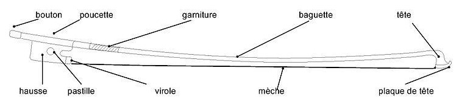

Le violon
Les éléments de composition du violon :
Le violon est constitué de 70 à 85 pièces, collées ou emboîtées, qui forment trois grandes parties : le corps, la manche et la tête.
La tête est constituée de la volute et du cheviller. La volute se présente le plus souvent sous forme d'une spirale qui s'enroule. Les chevilles servent quant à elles à accorder l'instrument, c'est à dire tendre ou détendre les cordes du violon.
Le manche: c’est la partie « principale » du violon puisque que c’est sur le manche que le violoniste déplace sa main gauche et joue. En opposition avec le reste de l’instrument, cette partie n’est pas vernie. De par son importance dans la qualité et le confort de jeu du musicien, cette partie est et doit être fabriquée avec le plus grand soin.
le corps:La caisse de résonance est composée, sur le devant, d’une table d’harmonie, percée par 2 ouïes, à laquelle on oppose un fond. L’instrument compte également 6 éclisses ondulées sur ses côtés. À noter la présence d’un filet (3 brins de bois) incrusté dans la table et le fond pour suivre et souligner les courbures du violon et prévenir les cassures.
À l’extrémité basse du violon, une courte cheville de bois dur est enfoncée dans le tasseau : appelée « bouton », elle sert à fixer le cordier, chargé de recevoir les cordes. À noter qu’un sifflet inférieur vient empêcher le cordier d’altérer la table d’harmonie.
Entre la touche et le cordier se trouve le chevalet, situé au niveau des ouïes du violon. Ajourée, cette petite planchette d’érable supporte les cordes et transmet la vibration générée par le passage de l’archet.
Les grandes parties d’un archet
Étymologiquement, l’archet est le « petit arc » qui accompagne systématiquement (ou presque) tous les violonistes… Là encore, la connaissance de son vocabulaire conditionne sa bonne utilisation…
La Tête
L’extrémité haute de l’archet abrite une plaque de tête, sous laquelle sont fixés les crins de chevaux. Cette protection peut être réalisée en ivoire, en argent, en or, en nacre ou en bois rares, voire en galalithe (un polymère ressemblant à l’ivoire). À son strict opposé se trouve la tête de l’archet.
La Baguette
La mèche compte, en moyenne, environ 80 crins d’étalons, provenant de régions froides comme la Sibérie, la Mongolie ou la Mandchourie. Trop lisses pour produire un son, les crins doivent être frottés avec de la résine de pin ou colophane.
À l’opposé de la mèche, il y a la baguette : légèrement cambrée, elle est traditionnellement fabriquée en bois du Brésil, même si certains modèles peuvent être conçus avec d’autres matières comme la fibre de carbone.
La Poignée
Au talon de l’archet se trouve le bouton : il s’agit d’une vis destinée à régler la tension de la mèche, dont l’écrou se situe dans la hausse, sur laquelle se trouve la pastille, traditionnellement faite dans un matériau précieux (nacre, or, argent…).
Pour favoriser la préhension de l’archet, il est muni d’une poucette, au début de la baguette, suivie par la garniture. Un fil de métal fin entouré sur 4 centimètres, destiné à équilibrer l’ensemble et à protéger l’archet de l’usure.